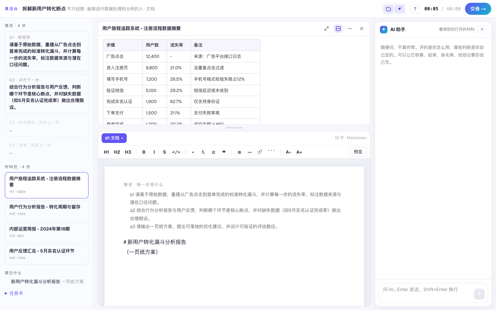

百业AI｜真活 · 操作手册 04
候选人怎么做题
给候选人（出任务的人也可以转发）按题目建议用时
打开出任务的人发来的链接就能做，不用注册。材料、作答、AI 都在一个页面里，每一步自动记录，交卷后出报告。AI 随便用，像平时干活跟同事商量一样问它就行；评的是你怎么用，关键判断要自己做。
可以这样问 AI
- 「「m1 和 m3 里的销量对不上，帮我看看差在哪」」
- 「「我打算先算缺口再排补位，这个顺序有没有漏掉什么」」
- 「「这是我的结论，你挑挑毛病：哪句证据不够」」
- 「「把这三段整理成一页纸的结构，数字我自己核」」
少这样用：把整道题丢给 AI、原样照抄它的回答、不核对就用它给的数字——报告里会看得出来。
1先读任务书和规则
任务书说清了要你做什么、交给谁；规则里写着可以随便用 AI，评的是你怎么用。
1任务书：要做什么、交给谁
2规则：可以用 AI；材料里没有的数据要标注假设
- 1任务书：要做什么、交给谁
- 2规则：可以用 AI；材料里没有的数据要标注假设
2选做法，留个名字开始
一般选「在本页的操作台做」。联系方式选填，填了报告会发给你。
3左边推进和材料，中间作答，右边 AI
分步的题一步一步来，答完上一步才开下一步。计时到点不会强制停，但用时会记下来。

1推进：一步一步答
2材料包，点开在中间看
3在这里写交付物
4AI 助手随便问
5计时 / 交卷
- 1推进：一步一步答
- 2材料包，点开在中间看
- 3在这里写交付物
- 4AI 助手随便问
- 5计时 / 交卷
4最后一问（选填）
「如果再给你一天，你会先改哪里、为什么？」有余力就写，不写不扣分；写清楚哪里还不够可靠，算进评价。
5交卷：点两次
点「交卷」后按钮变红，再点一次才交上；交了就不能改。约 1–2 分钟出报告。